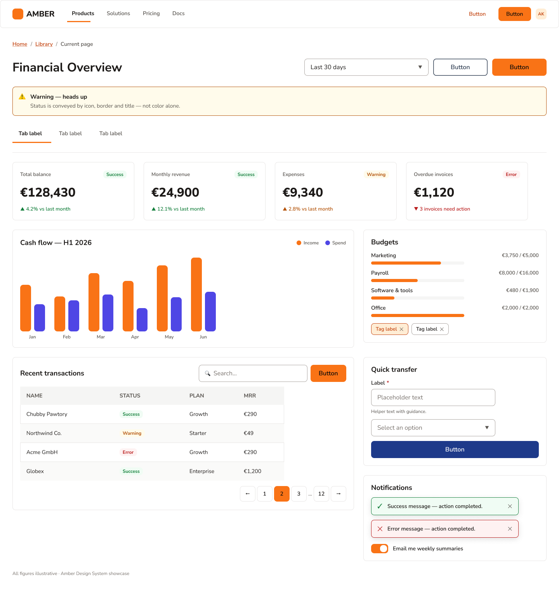
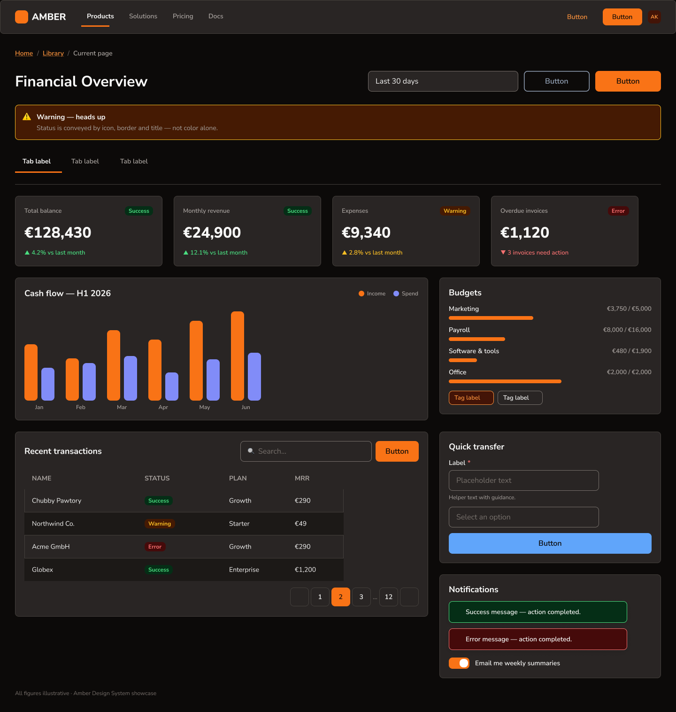

Design decisions, made once
Amber exists so that no one on the team ever debates a button radius again. Every color, spacing step, and state lives as a Figma variable; every component is built from those tokens and nothing else. Flip one mode switch and the entire dashboard re-themes from light to dark — no detached instances, no manual overrides.
A warm neutral base, one decisive accent
The palette pairs warm stone neutrals with a single high-energy amber-orange for primary actions. Semantic feedback colors — success, warning, error — each ship with an AA-compliant text shade and a subtle background tint, so alerts and badges compose themselves.
#F97316
#1C1917
#FFEDD5
#FAFAF9
#15803D
#B45309
#B91C1C
#1E3A8A
The library, alive on this page
These aren't screenshots — every element below is rebuilt in code from Amber's tokens, exactly as specified in Figma. Hover, click, and toggle them.
Buttons
Three weights of intent: filled amber for the one primary action per view, outlined for secondary actions, and deep navy for trusted third-party flows. All share a 44px height — comfortably above the WCAG touch-target minimum.
Badges & Tags
Badges pair a semantic text color with its subtle background tint — status readable at a glance, contrast guaranteed by the token pairing. Tags are dismissible filters with the same 8px radius language.
Alert
Page-level messaging on the warning tint. The icon, body, and dismiss control sit on one flexible row that survives any message length — tested from one line to four.
Tab Item
A 2px amber underline marks the active view; inactive tabs keep secondary text color until hover. The full 46px row is clickable, not just the label. Try them.
KPI Card
The dashboard's headline pattern: label, badge, figure, trend — in strict hierarchy. The trend line borrows semantic colors, so "up" isn't always green: an expense rising is set in error red.
Progress Bar
Budget consumption in an 8px track. Amber while spending is healthy; the fill switches to error red at 100% — the token does the warning, no extra UI needed.
Form Field · Select · Search Bar
Inputs share one anatomy — label, 44px control, hint line — so validation states swap in without layout shift. Focus rings use the amber accent at 2px, visible on both themes.
Toast & Toggle
Toasts confirm or fail in one compact line using the same semantic pairs as badges. The toggle is a 44×24 switch — the thumb travels, the track re-colors, and the whole row is the hit area.
Pagination
40px square targets with a filled amber current page. Ellipsis truncation keeps it to seven slots no matter how long the table gets.
From atoms to a working dashboard
The proof of a system is the screen it builds. The showcase assembles every component above into a financial overview — KPI row, cash-flow chart, budgets, transactions table, quick transfer, and notifications — and then re-themes it to dark by switching one variable mode.


Consistency that compounds
With tokens as the single source of truth, new screens come together in minutes instead of days, dark mode is free rather than a second project, and accessibility is baked into the palette instead of audited after the fact. Amber v1.0 covers the full core kit — and its atomic structure means v2 grows without breaking a single instance.